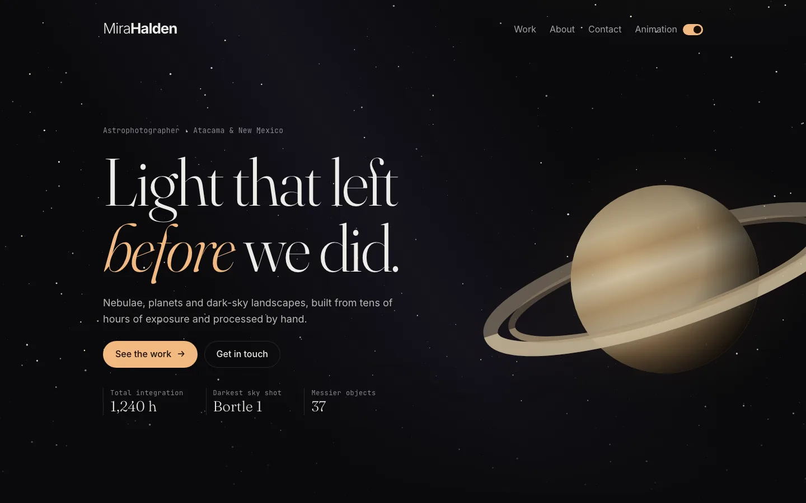
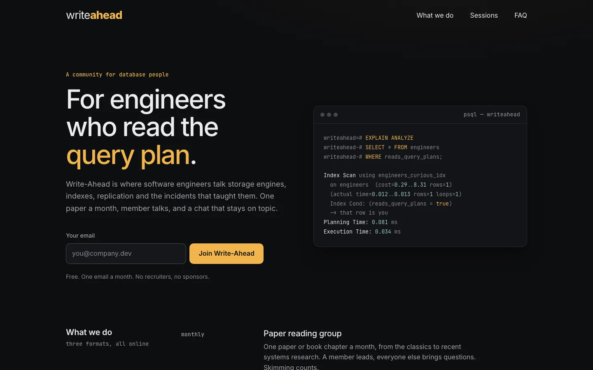

Astrophotographer portfolio
Design a web page for a photographer who is into space, planets and stars photography. Use /minimal-modern-ui skill.
Each example below was made from a single prompt, shown exactly as it was typed. Open any of them to see the full page.

Design a web page for a photographer who is into space, planets and stars photography. Use /minimal-modern-ui skill.

Use /minimal-modern-ui to create a landing page for a community of software engineers interested in databases.
The skill works with Claude Code. Setup takes one command; the steps are in the README.